A photographic journal · Java, Indonesia
Anna’s
Travel.
Thirteen frames from a single trip — the green hush of rice paddies in the afternoon, a river hurrying past coconut palms, and a night spent walking through a garden made entirely of light.
Begin readingBy Day
The day moves slowly here. Water finds its level, palms lean toward it, and the paddies do what paddies do — sit perfectly still, holding the sky.
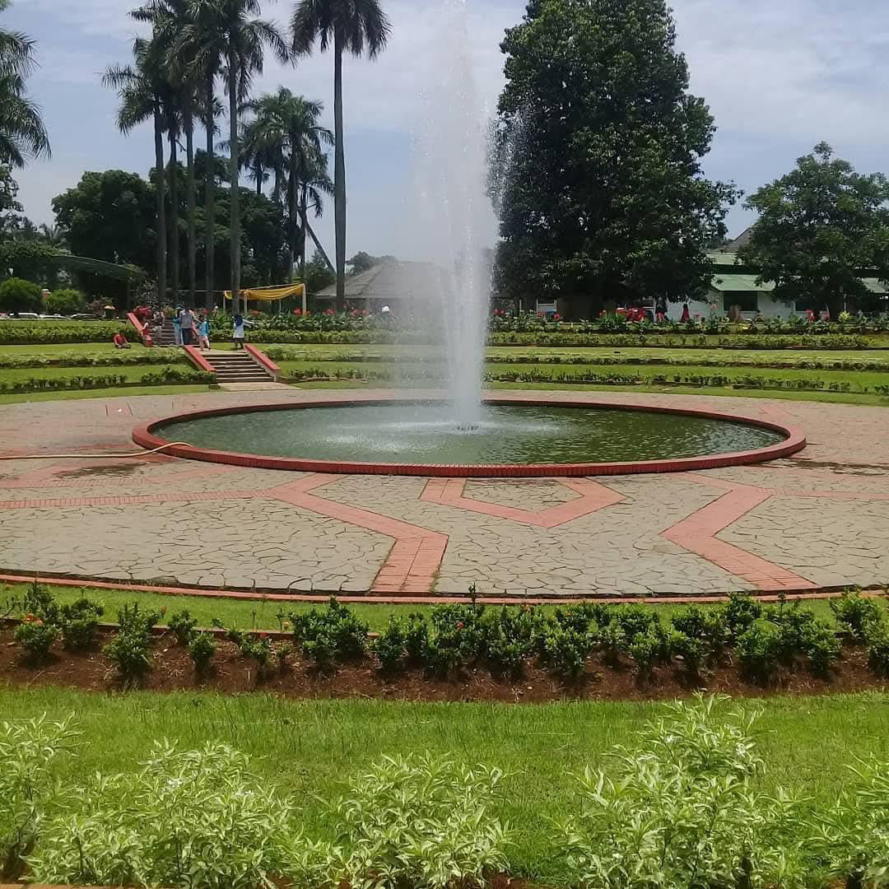
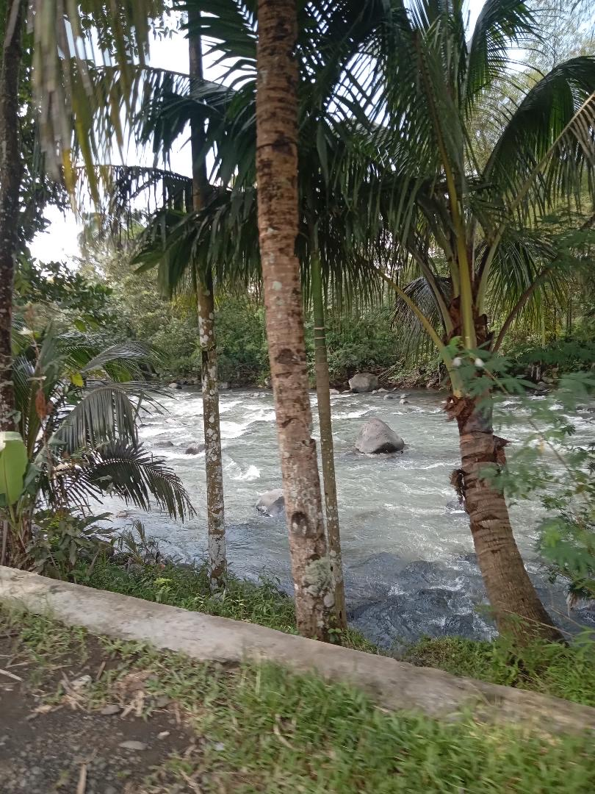
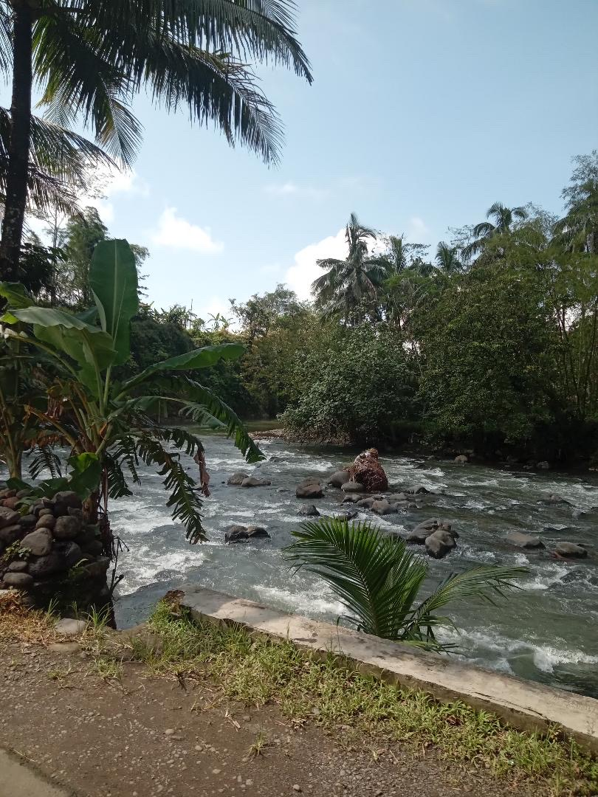
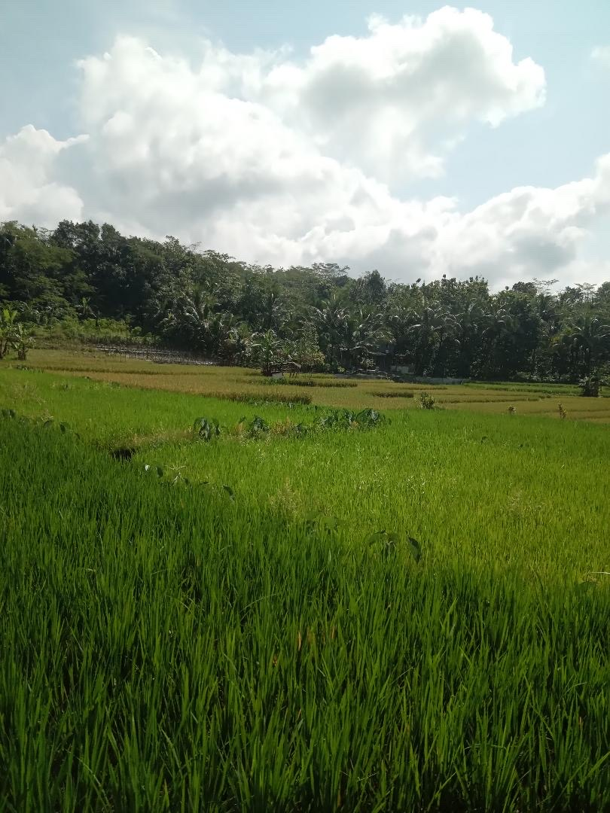
Field note: it had rained the night before, and everything — leaves, brick, the brim of the fountain — was still polished.
By Night
And then, the lights. Half a million of them, planted in the grass like flowers, arching overhead like rain caught mid‑fall. We didn’t talk much — just walked.
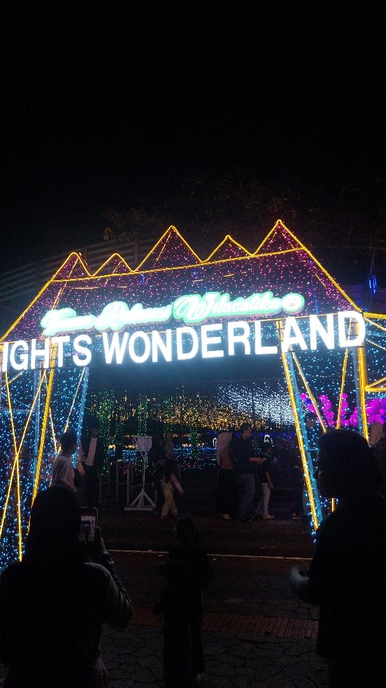
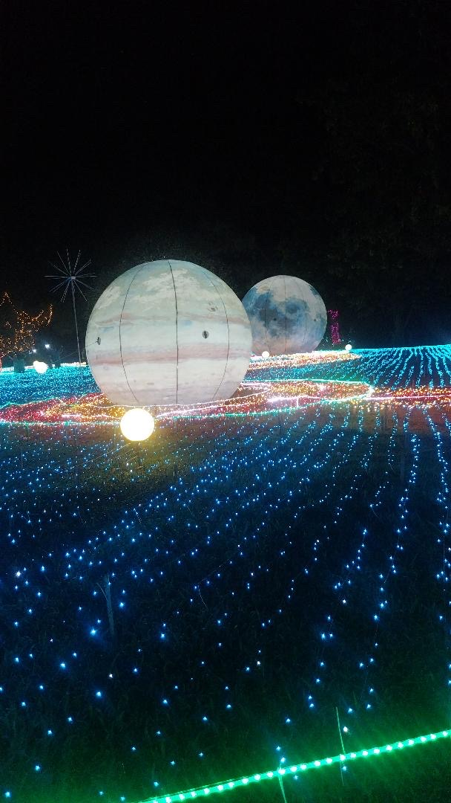
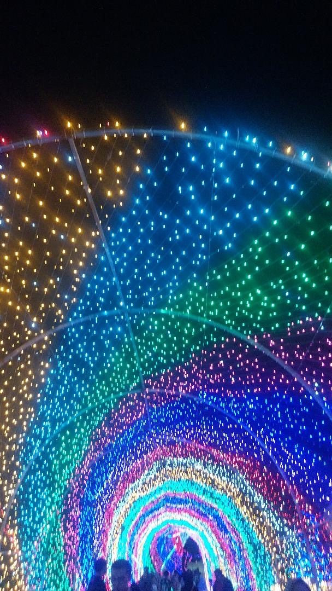
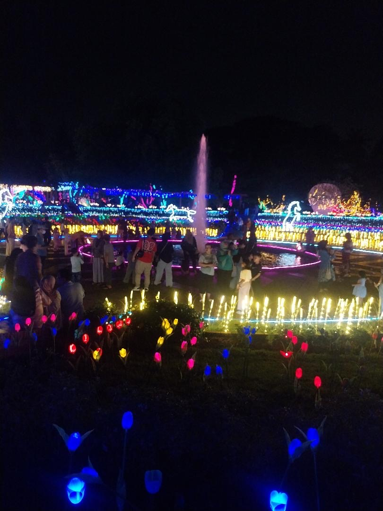
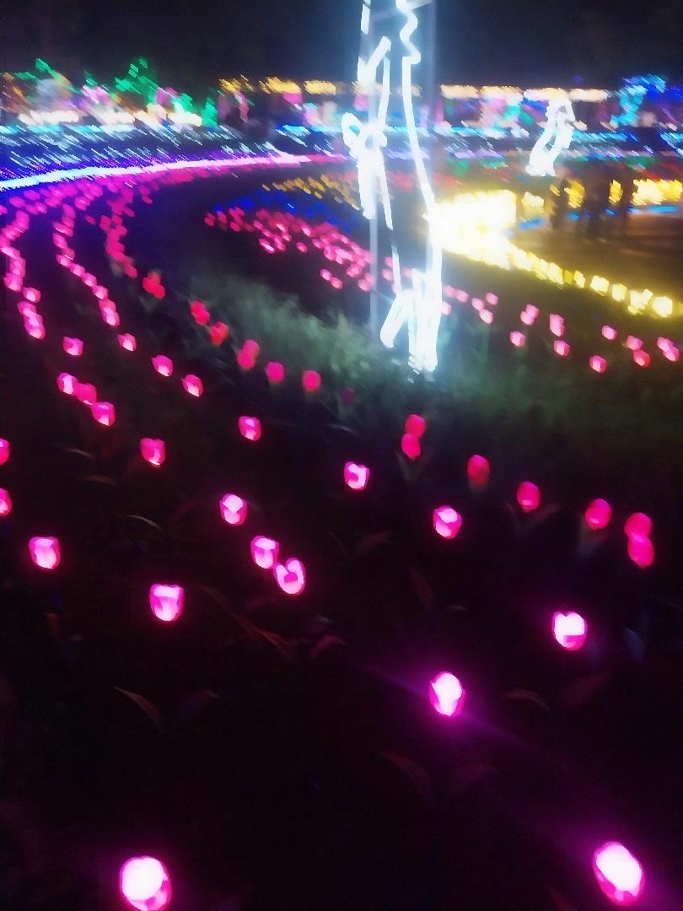
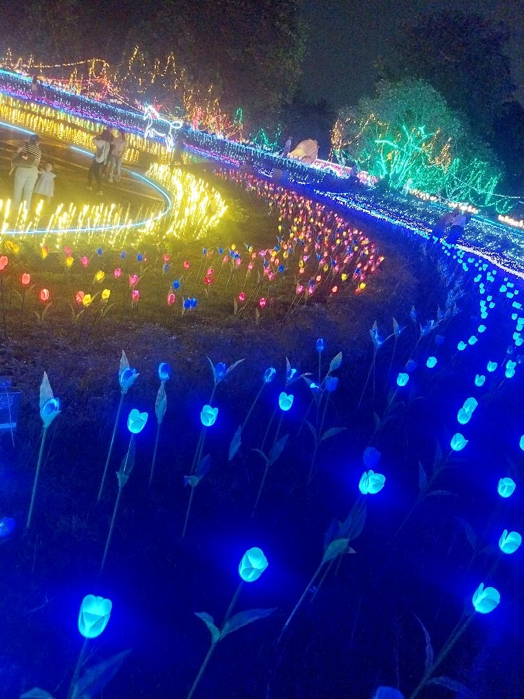
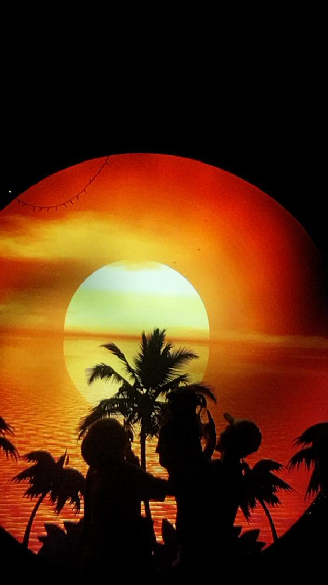
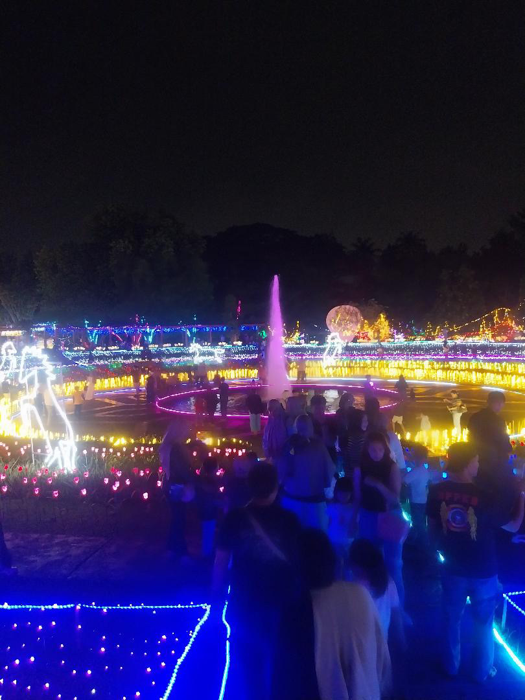
About this journal
Anna’s Travel is a small, slow-growing diary of places. The photographs are taken on a phone, kept mostly as they fell out of the camera, and gathered here so they can stop living inside it.
— Anna Yuriska